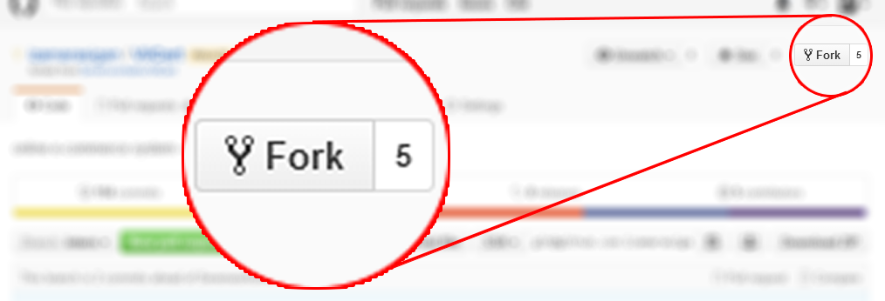
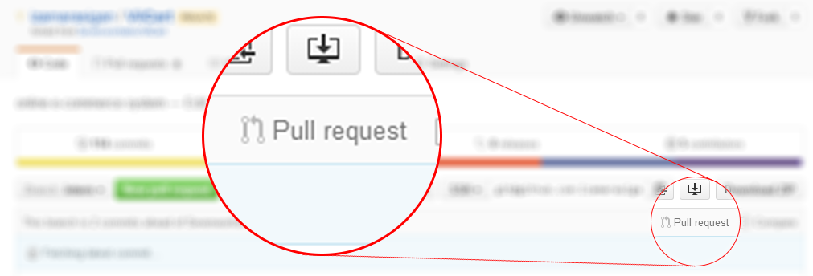

Version control systems are a category of software tools that help a software team manage changes to source code over time. Version control software keeps track of every modification to the code in a special kind of database. If a mistake is made, developers can turn back the clock and compare earlier versions of the code to help fix the mistake while minimizing disruption to all team members.
For almost all software projects, the source code is like the crown jewels - a precious asset whose value must be protected. For most software teams, the source code is a repository of the invaluable knowledge and understanding about the problem domain that the developers have collected and refined through careful effort. Version control protects source code from both catastrophe and the casual degradation of human error and unintended consequences.
Software developers working in teams are continually writing new source code and changing existing source code. The code for a project, app or software component is typically organized in a folder structure or “file tree”. One developer on the team may be working on a new feature while another developer fixes an unrelated bug by changing code, each developer may make their changes in several parts of the file tree.
Version control helps teams solve these kinds of problems, tracking every individual change by each contributor and helping prevent concurrent work from conflicting. Changes made in one part of the software can be incompatible with those made by another developer working at the same time. This problem should be discovered and solved in an orderly manner without blocking the work of the rest of the team. Further, in all software development, any change can introduce new bugs on its own and new software can‘t be trusted until it’s tested. So testing and development proceed together until a new version is ready.
Good version control software supports a developer's preferred workflow without imposing one particular way of working. Ideally it also works on any platform, rather than dictate what operating system or tool chain developers must use. Great version control systems facilitate a smooth and continuous flow of changes to the code rather than the frustrating and clumsy mechanism of file locking - giving the green light to one developer at the expense of blocking the progress of others.
Software teams that do not use any form of version control often run into problems like not knowing which changes that have been made are available to users or the creation of incompatible changes between two unrelated pieces of work that must then be painstakingly untangled and reworked. If you‘re a developer who has never used version control you may have added versions to your files, perhaps with suffixes like “final” or “latest” and then had to later deal with a new final version. Perhaps you’ve commented out code blocks because you want to disable certain functionality without deleting the code, fearing that there may be a use for it later.
Version control is a way out of these problems.Version control software is an essential part of the every-day of the modern software team‘s professional practices. Individual software developers who are accustomed to working with a capable version control system in their teams typically recognize the incredible value version control also gives them even on small solo projects. Once accustomed to the powerful benefits of version control systems, many developers wouldn’t consider working without it even for non-software projects.
Developing software without using version control is risky, like not having backups. Version control can also enable developers to move faster and it allows software teams to preserve efficiency and agility as the team scales to include more developers.
Version Control Systems (VCS) have seen great improvements over the past few decades and some are better than others. VCS are sometimes known as SCM (Source Code Management) tools or RCS (Revision Control System). One of the most popular VCS tools in use today is called Git. Git is a Distributed VCS, a category known as DVCS, more on that later. Like many of the most popular VCS systems available today, Git is free and open source. Regardless of what they are called, or which system is used, the primary benefits you should expect from version control are as follows.
While it is possible to develop software without using any version control, doing so subjects the project to a huge risk that no professional team would be advised to accept. So the question is not whether to use version control but which version control system to use.
There are many choices, but here we are going to focus on just one, Git.
By far, the most widely used modern version control system in the world today is Git. Git is a mature, actively maintained open source project originally developed in 2005 by Linus Torvalds, the famous creator of the Linux operating system kernel. A staggering number of software projects rely on Git for version control, including commercial projects as well as open source. Developers who have worked with Git are well represented in the pool of available software development talent and it works well on a wide range of operating systems and IDEs (Integrated Development Environments).
Having a distributed architecture, Git is an example of a DVCS (hence Distributed Version Control System). Rather than have only one single place for the full version history of the software as is common in once-popular version control systems like CVS or Subversion (also known as SVN), in Git, every developer's working copy of the code is also a repository that can contain the full history of all changes.
In addition to being distributed, Git has been designed with performance, security and flexibility in mind.
The raw performance characteristics of Git are very strong when compared to many alternatives. Committing new changes, branching, merging and comparing past versions are all optimized for performance. The algorithms implemented inside Git take advantage of deep knowledge about common attributes of real source code file trees, how they are usually modified over time and what the access patterns are.
Unlike some version control software, Git is not fooled by the names of the files when determining what the storage and version history of the file tree should be, instead, Git focuses on the file content itself. After all, source code files are frequently renamed, split, and rearranged. The object format of Git's repository files uses a combination of delta encoding (storing content differences), compression and explicitly stores directory contents and version metadata objects.
Being distributed enables significant performance benefits as well.
For example, say a developer, Alice, makes changes to source code, adding a feature for the upcoming 2.0 release, then commits those changes with descriptive messages. She then works on a second feature and commits those changes too. Naturally these are stored as separate pieces of work in the version history. Alice then switches to the version 1.3 branch of the same software to fix a bug that affects only that older version. The purpose of this is to enable Alice's team to ship a bug fix release, version 1.3.1, before version 2.0 is ready. Alice can then return to the 2.0 branch to continue working on new features for 2.0 and all of this can occur without any network access and is therefore fast and reliable. She could even do it on an airplane. When she is ready to send all of the individually committed changes to the remote repository, Alice can “push” them in one command.
Git has been designed with the integrity of managed source code as a top priority. The content of the files as well as the true relationships between files and directories, versions, tags and commits, all of these objects in the Git repository are secured with a cryptographically secure hashing algorithm called SHA1. This protects the code and the change history against both accidental and malicious change and ensures that the history is fully traceable.
With Git, you can be sure you have an authentic content history of your source code.
Some other version control systems have no protections against secret alteration at a later date. This can be a serious information security vulnerability for any organization that relies on software development.
One of Git's key design objectives is flexibility. Git is flexible in several respects: in support for various kinds of nonlinear development workflows, in its efficiency in both small and large projects and in its compatibility with many existing systems and protocols.
Git has been designed to support branching and tagging as first-class citizens (unlike SVN) and operations that affect branches and tags (such as merging or reverting) are also stored as part of the change history. Not all version control systems feature this level of tracking.
Git is the best choice for most software teams today. While every team is different and should do their own analysis, here are the main reasons why version control with Git is preferred over alternatives:
Git has the functionality, performance, security and flexibility that most teams and individual developers need. These attributes of Git are detailed above. In side-by-side comparisons with most other alternatives, many teams find that Git is very favorable.
Git is the most broadly adopted tool of its kind. This is makes Git attractive for the following reasons. At Atlassian, nearly all of our project source code is managed in Git.
Vast numbers of developers already have Git experience and a significant proportion of college graduates may have experience with only Git. While some organizations may need to climb the learning curve when migrating to Git from another version control system, many of their existing and future developers do not need to be trained on Git.
In addition to the benefits of a large talent pool, the predominance of Git also means that many third party software tools and services are already integrated with Git including IDEs, and our own tools like DVCS desktop client SourceTree, issue and project tracking software, JIRA, and code hosting service, Bitbucket.
If you are an inexperienced developer wanting to build up valuable skills in software development tools, when it comes to version control, Git should be on your list.
Git is a very well supported open source project with over a decade of solid stewardship. The project maintainers have shown balanced judgment and a mature approach to meeting the long term needs of its users with regular releases that improve usability and functionality. The quality of the open source software is easily scrutinized and countless businesses rely heavily on that quality.
Git enjoys great community support and a vast user base. Documentation is excellent and plentiful, including books, tutorials and dedicated web sites. There are also podcasts and video tutorials.
Being open source lowers the cost for hobbyist developers as they can use Git without paying a fee. For use in open-source projects, Git is undoubtedly the successor to the previous generations of successful open source version control systems, SVN and CVS.
One common criticism of Git is that it can be difficult to learn. Some of the terminology in Git will be novel to newcomers and for users of other systems, the Git terminology may be different, for example, revert in Git has a different meaning than in SVN or CVS. Nevertheless, Git is very capable and provides a lot of power to its users. Learning to use that power can take some time, however once it has been learned, that power can be used by the team to increase their development speed.
For those teams coming from a non-distributed VCS, having a central repository may seem like a good thing that they don‘t want to lose. However, while Git has been designed as a distributed version control system (DVCS), with Git, you can still have an official, canonical repository where all changes to the software must be stored. With Git, because each developer’s repository is complete, their work doesn‘t need to be constrained by the availability and performance of the “central” server. During outages or while offline, developers can still consult the full project history. Because Git is flexible as well as being distributed, you can work the way you are accustomed to but gain the additional benefits of Git, some of which you may not even realise you’re missing.
Now that you understand what version control is, what Git is and why software teams should use it, read on to discover the benefits Git can provide across the whole organization.
The git init command creates a new Git repository. It can be used to convert an existing, unversioned project to a Git repository or initialize a new empty repository. Most of the other Git commands are not available outside of an initialized repository, so this is usually the first command you’ll run in a new project.
Executing git init creates a .git subdirectory in the project root, which contains all of the necessary metadata for the repo. Aside from the .git directory, an existing project remains unaltered (unlike SVN, Git doesn't require a .git folder in every subdirectory).
Transform the current directory into a Git repository. This adds a .git folder to the current directory and makes it possible to start recording revisions of the project.
Create an empty Git repository in the specified directory. Running this command will create a new folder called <directory> containing nothing but the .git subdirectory.
Initialize an empty Git repository, but omit the working directory. Shared repositories should always be created with the --bare flag (see discussion below). Conventionally, repositories initialized with the --bare flag end in .git. For example, the bare version of a repository called my-project should be stored in a directory called my-project.git.
The git config command lets you configure your Git installation (or an individual repository) from the command line. This command can define everything from user info to preferences to the behavior of a repository. Several common configuration options are listed below.
Define the author name to be used for all commits in the current repository. Typically, you’ll want to use the --global flag to set configuration options for the current user.
Define the author name to be used for all commits by the current user.
Define the author email to be used for all commits by the current user.
Create a shortcut for a Git command.
Define the text editor used by commands like git commit for all users on the current machine. The <editor> argument should be the command that launches the desired editor (e.g., vi).
Open the global configuration file in a text editor for manual editing.
The first thing you’ll want to do after installing Git is tell it your name/email and customize some of the default settings. A typical initial configuration might look something like the following:
The git add command adds a change in the working directory to the staging area. It tells Git that you want to include updates to a particular file in the next commit. However, git add doesn't really affect the repository in any significant way—changes are not actually recorded until you run git commit.
In conjunction with these commands, you'll also need git status to view the state of the working directory and the staging area.
Stage all changes in <file> for the next commit
Stage all changes in <directory> for the next commit
Begin an interactive staging session that lets you choose portions of a file to add to the next commit. This will present you with a chunk of changes and prompt you for a command. Use y to stage the chunk, n to ignore the chunk, s to split it into smaller chunks, e to manually edit the chunk, and q to exit.
The git add and git commit commands compose the fundamental Git workflow. These are the two commands that every Git user needs to understand, regardless of their team’s collaboration model. They are the means to record versions of a project into the repository’s history.
Developing a project revolves around the basic edit/stage/commit pattern. First, you edit your files in the working directory. When you’re ready to save a copy of the current state of the project, you stage changes with git add. After you’re happy with the staged snapshot, you commit it to the project history with git commit.
The git add command should not be confused with svn add, which adds a file to the repository. Instead, git add works on the more abstract level of changes. This means that git add needs to be called every time you alter a file, whereas svn add only needs to be called once for each file. It may sound redundant, but this workflow makes it much easier to keep a project organized.
The staging area is one of Git's more unique features, and it can take some time to wrap your head around it if you’re coming from an SVN (or even a Mercurial) background. It helps to think of it as a buffer between the working directory and the project history.
Instead of committing all of the changes you've made since the last commit, the stage lets you group related changes into highly focused snapshots before actually committing it to the project history. This means you can make all sorts of edits to unrelated files, then go back and split them up into logical commits by adding related changes to the stage and commit them piece-by-piece. As in any revision control system, it’s important to create atomic commits so that it’s easy to track down bugs and revert changes with minimal impact on the rest of the project.
When you’re starting a new project, git add serves the same function as svn import. To create an initial commit of the current directory, use the following two commands:
Once you’ve got your project up-and-running, new files can be added by passing the path to git add:
The above commands can also be used to record changes to existing files. Again, Git doesn’t differentiate between staging changes in new files vs. changes in files that have already been added to the repository.
The git remote command lets you create, view, and delete connections to other repositories. Remote connections are more like bookmarks rather than direct links into other repositories. Instead of providing real-time access to another repository, they serve as convenient names that can be used to reference a not-so-convenient URL.
List the remote connections you have to other repositories.
Same as the above command, but include the URL of each connection.
Create a new connection to a remote repository. After adding a remote, you’ll be able to use <name> as a convenient shortcut for <url> in other Git commands.
Remove the connection to the remote repository called <name>.
Rename a remote connection from <old-name> to <new-name>.
The git fetch command imports commits from a remote repository into your local repo. The resulting commits are stored as remote branches instead of the normal local branches that we’ve been working with. This gives you a chance to review changes before integrating them into your copy of the project.
Fetch all of the branches from the repository. This also downloads all of the required commits and files from the other repository.
Same as the above command, but only fetch the specified branch.
Merging upstream changes into your local repository is a common task in Git-based collaboration workflows. We already know how to do this with git fetch followed by git merge, but git pull rolls this into a single command.
Fetch the specified remote’s copy of the current branch and immediately merge it into the local copy. This is the same as
git fetch <remote> followed by
git merge origin/<current-branch>.
Same as the above command, but instead of using git merge to integrate the remote branch with the local one, use git rebase.
Pushing is how you transfer commits from your local repository to a remote repo. It's the counterpart to git fetch, but whereas fetching imports commits to local branches, pushing exports commits to remote branches. This has the potential to overwrite changes, so you need to be careful how you use it. These issues are discussed below.
Push the specified branch to <remote>, along with all of the necessary commits and internal objects. This creates a local branch in the destination repository. To prevent you from overwriting commits, Git won’t let you push when it results in a non-fast-forward merge in the destination repository.
Same as the above command, but force the push even if it results in a non-fast-forward merge. Do not use the --force flag unless you’re absolutely sure you know what you’re doing.
Push all of your local branches to the specified remote.
Tags are not automatically pushed when you push a branch or use the --all option. The --tags flag sends all of your local tags to the remote repository.
The git commit command commits the staged snapshot to the project history. Committed snapshots can be thought of as “safe” versions of a project—Git will never change them unless you explicity ask it to. Along with git add, this is one of the most important Git commands.
While they share the same name, this command is nothing like svn commit. Snapshots are committed to the local repository, and this requires absolutely no interaction with other Git repositories.
Commit the staged snapshot. This will launch a text editor prompting you for a commit message. After you’ve entered a message, save the file and close the editor to create the actual commit. git commit -m "<message>"
Commit the staged snapshot, but instead of launching a text editor, use <message> as the commit message.
Commit a snapshot of all changes in the working directory. This only includes modifications to tracked files (those that have been added with git add at some point in their history).
Rebasing is the process of moving a branch to a new base commit.
Rebase the current branch onto <base>, which can be any kind of commit reference (an ID, a branch name, a tag, or a relative reference to HEAD).
The git checkout command serves three distinct functions: checking out files, checking out commits, and checking out branches. In this module, we’re only concerned with the first two configurations.
Checking out a commit makes the entire working directory match that commit. This can be used to view an old state of your project without altering your current state in any way. Checking out a file lets you see an old version of that particular file, leaving the rest of your working directory untouched.
Return to the master branch. Branches are covered in depth in the next module, but for now, you can just think of this as a way to get back to the “current” state of the project.
Check out a previous version of a file. This turns the <file> that resides in the working directory into an exact copy of the one from <commit> and adds it to the staging area.
Update all files in the working directory to match the specified commit. You can use either a commit hash or a tag as the <commit> argument. This will put you in a detached HEAD state.
A branch represents an independent line of development. Branches serve as an abstraction for the edit/stage/commit process discussed in Git Basics, the first module of this series. You can think of them as a way to request a brand new working directory, staging area, and project history. New commits are recorded in the history for the current branch, which results in a fork in the history of the project.
List all of the branches in your repository.
Create a new branch called <branch>. This does not check out the new branch.
Delete the specified branch. This is a “safe” operation in that Git prevents you from deleting the branch if it has unmerged changes.
Force delete the specified branch, even if it has unmerged changes. This is the command to use if you want to permanently throw away all of the commits associated with a particular line of development.
Rename the current branch to <branch>.
Merging is Git's way of putting a forked history back together again. The git merge command lets you take the independent lines of development created by git branch and integrate them into a single branch.
Merge the specified branch into the current branch. Git will determine the merge algorithm automatically (discussed below).
Merge the specified branch into the current branch, but always generate a merge commit (even if it was a fast-forward merge). This is useful for documenting all merges that occur in your repository.
If git revert is a “safe” way to undo changes, you can think of git reset as the dangerous method. When you undo with git reset(and the commits are no longer referenced by any ref or the reflog), there is no way to retrieve the original copy—it is a permanent undo. Care must be taken when using this tool, as it’s one of the only Git commands that has the potential to lose your work.
Remove the specified file from the staging area, but leave the working directory unchanged. This unstages a file without overwriting any changes.
Reset the staging area to match the most recent commit, but leave the working directory unchanged. This unstages all files without overwriting any changes, giving you the opportunity to re-build the staged snapshot from scratch.
Reset the staging area and the working directory to match the most recent commit. In addition to unstaging changes, the --hard flag tells Git to overwrite all changes in the working directory, too. Put another way: this obliterates all uncommitted changes, so make sure you really want to throw away your local developments before using it.
Move the current branch tip backward to <commit>, reset the staging area to match, but leave the working directory alone. All changes made since <commit> will reside in the working directory, which lets you re-commit the project history using cleaner, more atomic snapshots.
Move the current branch tip backward to <commit> and reset both the staging area and the working directory to match. This obliterates not only the uncommitted changes, but all commits after <commit>, as well.
The git clean command removes untracked files from your working directory. This is really more of a convenience command, since it’s trivial to see which files are untracked with git status and remove them manually. Like an ordinary rm command, git clean is not undoable, so make sure you really want to delete the untracked files before you run it.
Perform a “dry run” of git clean. This will show you which files are going to be removed without actually doing it.
Remove untracked files from the current directory. The -f (force) flag is required unless the clean.requireForce configuration option is set to false (it's true by default). This will not remove untracked folders or files specified by .gitignore.
Remove untracked files, but limit the operation to the specified path.
Remove untracked files and untracked directories from the current directory.
Remove untracked files from the current directory as well as any files that Git usually ignores.
The git status command displays the state of the working directory and the staging area. It lets you see which changes have been staged, which haven’t, and which files aren’t being tracked by Git. Status output does not show you any information regarding the committed project history. For this, you need to use git log.
List which files are staged, unstaged, and untracked.
The git log command displays committed snapshots. It lets you list the project history, filter it, and search for specific changes. While git status lets you inspect the working directory and the staging area, git log only operates on the committed history.
Display the entire commit history using the default formatting. If the output takes up more than one screen, you can use Space to scroll and q to exit.
Limit the number of commits by <limit>. For example, git log -n 3 will display only 3 commits.
Condense each commit to a single line. This is useful for getting a high-level overview of the project history.
Along with the ordinary git log information, include which files were altered and the relative number of lines that were added or deleted from each of them.
Display the patch representing each commit. This shows the full diff of each commit, which is the most detailed view you can have of your project history.
Search for commits by a particular author. The <pattern> argument can be a plain string or a regular expression.
Search for commits with a commit message that matches <pattern>, which can be a plain string or a regular expression.
Show only commits that occur between <since> and <until>. Both arguments can be either a commit ID, a branch name, HEAD, or any other kind of revision reference.
Only display commits that include the specified file. This is an easy way to see the history of a particular file.
A few useful options to consider. The —graph flag that will draw a text based graph of the commits on the left hand side of the commit messages. —decorate adds the names of branches or tags of the commits that are shown. —oneline shows the commit information on a single line making it easier to browse through commits at-a-glance.
The git revert command undoes a committed snapshot. But, instead of removing the commit from the project history, it figures out how to undo the changes introduced by the commit and appends a new commit with the resulting content. This prevents Git from losing history, which is important for the integrity of your revision history and for reliable collaboration.
Generate a new commit that undoes all of the changes introduced in <commit>, then apply it to the current branch.
Five basic steps to collaborate with team
A fork is a copy of a repository. Forking a repository allows you to freely experiment with changes without affecting the original project.
Most commonly, forks are used to either propose changes to someone else's project or to use someone else's project as a starting point for your own idea.
A great example of using forks to propose changes is for bug fixes. Rather than logging an issue for a bug you've found, you can:
You might fork a project in order to propose changes to the upstream, or original, repository. In this case, it's good practice to regularly sync your fork with the upstream repository. To do this, you'll need to use Git on the command line. You can practice setting the upstream repository using the same octocat/Your-Repository repository you just forked!
If you haven't yet, you should first set up Git. Don't forget to set up authentication to GitHub from Git as well.
Right now, you have a fork of the Your-Repository repository, but you don't have the files in that repository on your computer. Let's create a clone of your fork locally on your computer.
Now, you have a local copy of your fork of the Your-Repository repository!
When you fork a project in order to propose changes to the original repository, you can configure Git to pull changes from the original, or upstream, repository into the local clone of your fork.
Now, you can keep your fork synced with the upstream repository with a few Git commands. For more information, see "Syncing a fork."
Sync a fork of a repository to keep it up-to-date with the upstream repository.
Before you can sync your fork with an upstream repository, you must configure a remote that points to the upstream repository in Git.
Pull requests are a feature that makes it easier for developers to collaborate using Github. They provide a user-friendly web interface for discussing proposed changes before integrating them into the official project.
In their simplest form, pull requests are a mechanism for a developer to notify team members that they have completed a feature. Once their feature branch is ready, the developer files a pull request via their Bitbucket account. This lets everybody involved know that they need to review the code and merge it into the master branch.
Pull requests can be used in conjunction with the Feature Branch Workflow, the Gitflow Workflow, or the Forking Workflow. But a pull request requires either two distinct branches or two distinct repositories, so they will not work with the Centralized Workflow. Using pull requests with each of these workflows is slightly different, but the general process is as follows: